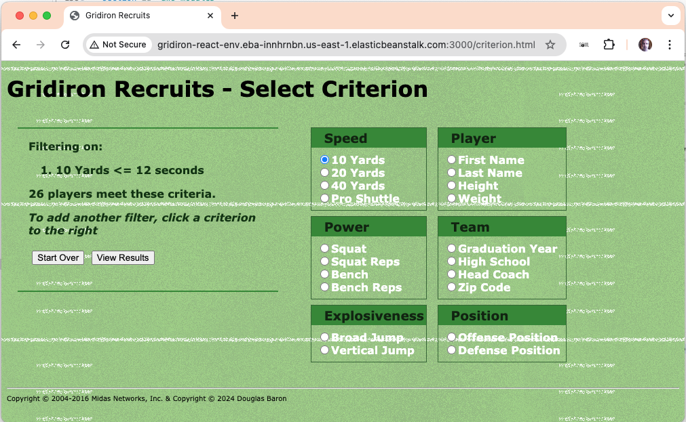

Automated user migration and management of AWS Identity and Access Management (IAM) resource

In this project based on a real-world scenario, I acted as Cloud Specialist with the mission to migrate users in an automated way and manage AWS IAM (Identity and Access Management) resources.
There were 100 users that needed to be migrated and have MFA (Multi-fa ctor authentication) enabled on their accounts, as this is a security best practice.
To avoid repetitive and error prone manual tasks in the AWS console, I looked for the best way to automate the processes.

I cleaned up a .csv file containing an exported list of users, mapping positions to various groups that I had created in IAM.
I then ran a shell script using the AWS CLI to automatically create those users and add them to their respective groups.
Users were assigned fixed passwords that they would have to change on initial login.
All groups were configured to require MFA to gain access to their services.

The script worked beautifully, creating the hundred users very quickly and easily.
Migrating a workload running in a Corporate DataCenter to AWS

In another project based in a real-world scenario, I acted as the Cloud Specialist responsible for migrating a workload running in a Corporate DataCenter to AWS.
The application and database were migrated to AWS using the Lift & Shift (rehost) model, moving both application and database data.
I followed some migration steps: Planning (sizing, prerequisites, resource naming), Execution (resource provisioning, best practices), Go-live (validation test - Dry-run, final migration - Cutover) and Post Go-live (ensure the operation of the application and user access).

I have to admit, this lift and shift included a Django web app served by a python app, neither of which I could write or even debug myself.
I guess that's as it should be - migration to the cloud shouldn't require expertise on the applications or content!
Similarly, the database dump, imported to the AWS RDS, was strictly black box for this exercise, validating the table structure and population only.

The Wiki worked perfectly, creating and updating articles as designed.
Implementation of a Scalable Web Application using the services of AWS Elastic Beanstalk, DynamoDB, CloudFront and Edge Location

In this project based on a real-world scenario, I was responsible for implementing an application that needs to support the high demand of a large number of users accessing it simultaneously.
This application has been used in a large conference that had more than 10,000 people, in-person and online, with participants from all over the world. The event was broadcast online and in person and 10 vouchers were drawn for 3 Cloud certifications. At that moment, more than 10,000 people in the audience registered their e-mails to guarantee their participation in the raffle.
We used in AWS, Elastic Beanstalk services to deploy the web application, DynamoDB to store emails, CloudFront to cache static and dynamic files in an Edge Location close to the user.
Load was simulated with stress -c 4

Deploying pet project GridIron Recruits on AWS
In this project evolved over the years, I used and developed AWS Cloud Specialist skills to deploy a ReactJS app running under Node on a load-balanced EC2 instance under AWS Beanstalk, pulling player data from an S3 bucket.
TODO for this project: 1. Make available on HTTP(S) ports, not 3000; 2. Use a custom domain name, not elasticbeanstalk.com.
Implementation of a set of EC2 instances using Terraform and AWS Systems Manager configuration with Amazon Simple Notification Service for automated installation of security agents

In this project based on a real-world scenario, I acted as DevSecOps Engineer, and I deployed a set of EC2 instances and infrastructure in an automated way using Terraform (infrastructure as code - IaC). Also, it was necessary to install a specific security agent on all these instances in an automated way.
Once the infrastructure was provisioned, AWS System Manager and its component Command Run were used to install the security agents in an automated way. I used the Amazon Simple Notification Service – SNS to send an email informing the whole process status. Receipt of that email was a reassuring confirmation of process completion.

Executive Presentation of Infrastructure costs for an SAP Migration project from On-Premises to AWS

In this project based on a real-world scenario, I acted as a Cloud Architect and created an executive presentation of infrastructure costs for a SAP migration project from On-Premises to AWS.
SAP workloads were running in a corporate DataCenter with the environment divided into Production, Quality Assurance - QA and Development/Test layers.
My mission was to estimate the costs of migration to AWS, considering that this infrastructure will be running on AWS for at least the next 3 years.
I used the AWS Pricing Calculator to build an estimate, mapping services from a spreadsheet containing the onprem hardware, storage and load capacity. AWS services needed to meet or exceed requirements includeds ECS instances, Application Load Balancers, Amazon Elastic File System (EFS), Amazon RDS Oracle instances, and an AWS Support Plan.

12 Month Cost slide for the presentation.